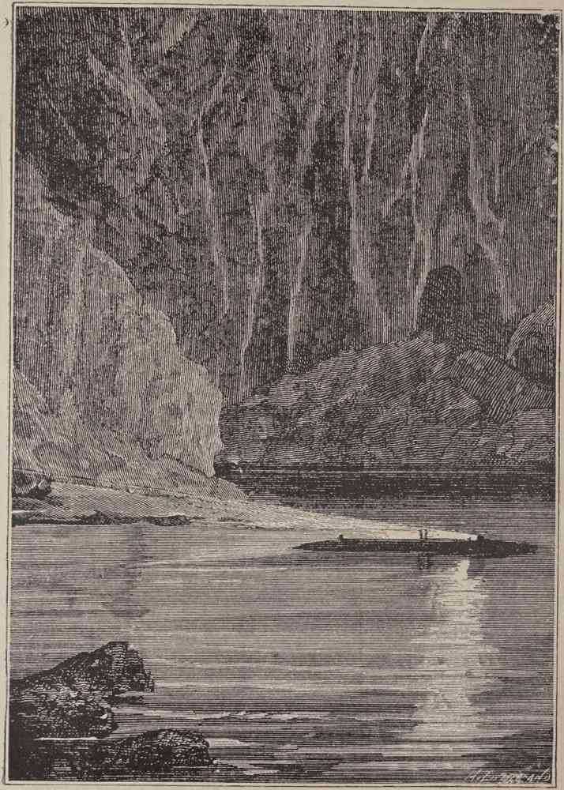

Vessel Log - Nautilus
Location
Near Santorin, Mediterranean Sea (36°24'N, 25°26'E)
Water Temp
12°C
Salinity
38 ppt
Depth
50 fathoms
Notable Findings
Submarine coal deposits, volcanic rock formations
Observations
Coal extraction viable, faint volcanic glow detected
RETURN TO CHART

Sketch: Exploring the submarine coal mines near Santorin